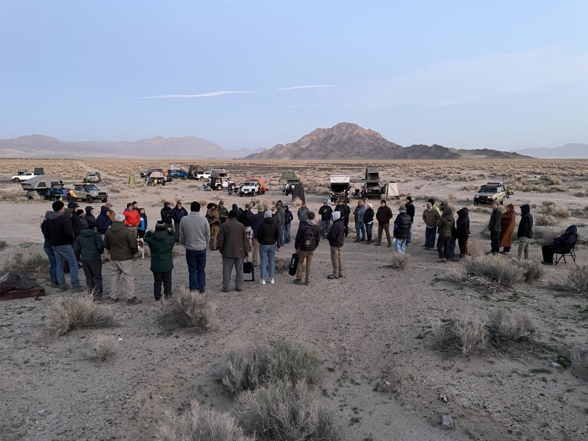
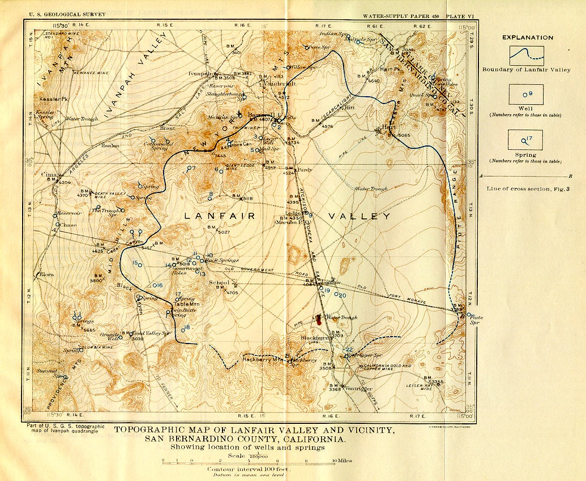

Mojave Spring TrailGuardian
Exciting news - The dates for the first 2026 Mojave Overlandbound Trail Guardian Event are confirmed for April 15-19! We are set to head into the desert to help the National Parks.
🚨 Rally Point Published
The Cleanup Rally Point has been published - please RSVP if you are planning on going so Kent has an accurate count.
Go to Rally Point
(Note: This link WORKS ONLY FROM THE APP)
East Bay Convoy
We will organize a convoy and some "time to play" for the East Bay crew - watch here for information and a separate Rally point for that.
Two Spring Projects
Dates: April 17-19, 2026
Trip Leader: Kent R (Message @Kent R for questions)
Project and event details to follow with the attendee message once everyone RSVP’s. There are separate instructions for each project; once participants are determined, separate messages will be sent for each.

Project #1: Dispersed Campsite Collection
The dispersed campsite collection project will be led by Barclay. We will assign groups of two with a team leader for every five groups. Hopefully the people that were on this project in the fall will sign up once again. (20 members needed)
There are separate instructions for each project; once we determine who is on each project I will send out separate messages for each.
Arrival / Staging
Everyone will arrive at their designated staging areas Thursday April 15.
- One half of the groups will be at the OX Ranch.
- The other half will meet at the Green Mill Campsite on the east side of the Great Soda Lake.
Tasks / Notes
- Identifying dispersed campsites on the west and center of the Preserve.
- This will be much like the event in 2024.
- Barclay Osborn will go through the instructions for data gathering.
- We will have a face-time call Thursday night between the camps.
- Some of this is repetitive but like the fall event we are authorized to use the NPS program for one full year starting October 01, 2025 and ending September 30, 2026.
- You will need a tablet or smart phone for this project.
- Friday night all teams will camp out in the Mojave rather than coming back to base camp. Potential camp location: 35.16280, -116.03071
Leads
- Project lead: Barclay Osborn
- Field team leaders: Tom Butler and Armin Pressler
Project #2: OX Ranch Repairs
The repairs at the OX ranch will be led by Mike Keith. There are roof repairs and siding that needs work. (10–15 members needed)
The OX Ranch is on the National Register of Historic Places.
Here is a little history of the OX Ranch that Chris Hersey found:
Base camp will be at the OX Ranch.
- Base camp coordinates: 35.202859, -115.202537
Arrival / Schedule
Everyone will arrive at the OX Ranch Base Camp Friday April 17. The work day is Saturday April 18. (I would suspect that some work will be done on Friday.)
Tasks / Requirements
- Fix the corrugated steel roof on the main barn.
- Repair barn and outbuilding siding as needed.
- Personal protective gear will be needed: boots & gloves.
- Probably also some area cleanup; we will know more after Bob Brann meets with Dave Nichols, Park Archaeologist.
Dutch Oven Dessert Potluck
This April we are having the 12th Overland Bound Trail Guardian in the Mojave National Preserve, we will be having a Dutch Oven desert contest/potluck to finish off the event around the Saturday campfire.
I am looking for members throughout the community to submit their favorite Dutch Oven dessert recipe. We will ask members attending to use one of them for a desert potluck on April 18th.
At last fall's Mojave Event Edward Hard cooked up two really great deserts in his dutch ovens for the campfire, this got me thinking that we could do something like this on a larger scale.
The winning recipe submitted by a member and the member cooking the recipe, will both receive some swag goodies from Overland Bound.
The OX Ranch
No we are not Going to Texas.

The OX Ranch on Lanfair Road in the East Mojave Desert is a historic, private ranch known for its significant role in regional ranching, its headquarters complex, and its presence near the old Mojave Trail, offering a glimpse into desert ranching life, distinct from the well-known Texas hunting ranch also called OX Ranch. This California location is part of the Mojave National Preserve's landscape, offering stark desert beauty, while the Texas ranch is a large hunting/event venue, so it's important to distinguish between the two.
Read more on digital-desert.com
A Historic Map

📍 Rally Point & Sign-up
- Trip Website: Mojave Spring TrailGuardian
- OB Forum: Rally Point Thread (RSVP Here)
- Convoy Info: We will organize a convoy and some "time to play" for the East Bay crew - watch here for information and a separate Rally point for that.
Change of Plans
If you RSVP'd and decide not to go, please update your RSVP to "NOT GOING" to open up a spot and let us know.
Trip Logistics
Dates
Wednesday, April 15 – Sunday, April 19, 2026
As usual we plan to convoy on Wednesday so we have some extra time to play. Feel free to join for part of the time if you can't make the full trip. Some of us may stay an extra day.
Meet-up Location
Date: Wednesday, Apr 15, 2026
Time: 6:30 AM
Location: McDonald’s at Santa Rita and Highway 580 E.
37°42'02.9"N 121°52'10.7"W
37.700795, -121.869642
Basecamp
Basecamp will be at the OX Ranch on Lanfair Road.
35°12'10.9"N 115°12'06.0"W
35.203015, -115.201677
Project 1 Potential Friday Camp
Friday night all teams for project 1 will camp out in the Mojave. Potential camp location:
35.16280, -116.03071
Get DirectionsExpected Weather in April
Current Weather
Expected Trip Weather
Get Ready Before We Go
🛑 SAFETY REQUIREMENTS
Rear Amber Chase Light and HAM Radio communications are REQUIRED to travel with the group.
Why Amber Chase Lights?
Dusty trails are common – amber lights penetrate dust far better than white or red, helping prevent rear-end collisions in low visibility. Learn more about Why Chase Lights?
HAM Radio
Program to 146.460 MHz (simplex). Handhelds work great even without a license for listening.
If you don't have a ham radio yet, check out our guide to get started.
Other Essentials
- Offline navigation (download GPX from Rally Point – limited/no cell service)
- Extra fuel
- Off-road tires, full-size spare, recovery gear
- Plenty of water, desert prep, meds, emergency kit
... Let the adventure
begin ...
making memories ...